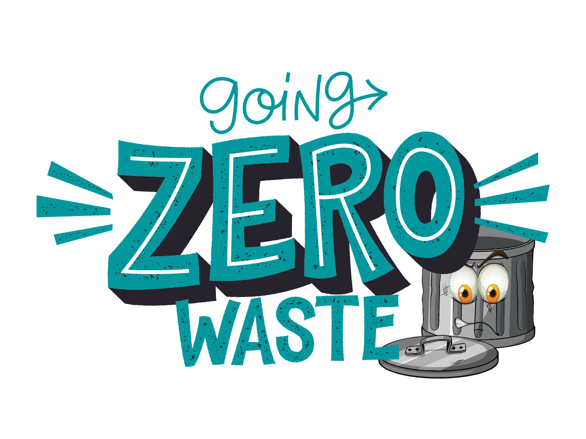

CaneSugarcane fiber is renewable, biodegradable and compostable. Sugarcane fiber is also called sugarcane bagasse or just
bagasse. Its the fibrous part of a sugarcane stalk thats left over after extracting the juice. Often this part of the
sugarcane is discarded, incinerated or used as a fuel source for sugar mills.
|
 |
Bamboo FiberMajority of the bamboo grown in different locations of the world is eco-friendly as it requires no pesticides or
fertilizers and needs little water. Currently, bamboo fabric is considered to be the trendiest sustainable fabric in the
fashion world.
|
 |
HempHemp fiber has been used by mankind to make eco clothes since before recorded history. It is currently thought that hemp
is the oldest cultivated plant in the world with uses dating back to the stone age. Bits of hemp fabric have been found
dating back to about 8,000 B.C. revealing the oldest example of human industry.
|
:max_bytes(150000):strip_icc():gifv():format(webp)/GettyImages-182895735-74b35b6a83a546f6a3e8352443de914e.jpg)
|
CorkCork Is Biodegradable and Recyclable. Cork fabric is a natural textile made from plant fibers. It is made from a strong layer of specific plant material, oak bark. The phellem layer of bark tissue is used to make cork, a versatile and impermeable material.
|

|